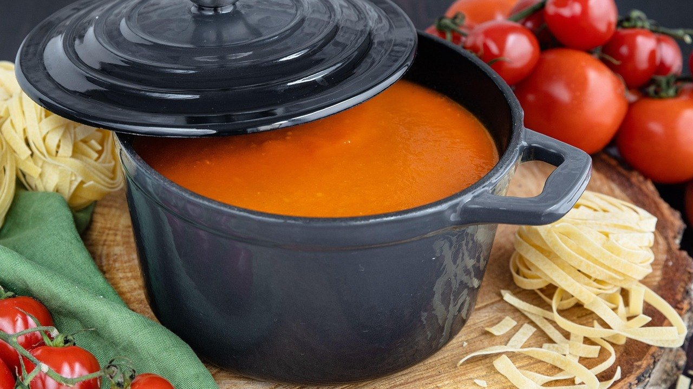

Сколько хранится суп в холодильнике: 5 ошибок, из-за которых он прокисает за ночь

Сколько хранится суп в холодильнике, зависит не только от рецепта. Одна и та же кастрюля борща может спокойно простоять три дня, а может прокиснуть уже к утру.
Суп портится из-за бактерий, которые быстрее всего размножаются в тёплой жидкости, примерно от 20 до 50 градусов. Чем дольше суп остаётся в этом промежутке, тем меньше он проживёт потом, даже в холодильнике.
Обычный мясной суп, щи или борщ хранят в холодильнике 2–3 дня. Но это при условии, что с ним не сделали одну из пяти частых ошибок.
Ошибка №1: оставлять кастрюлю на плите до утра
Самая частая история: суп сварили вечером, решили, что он остынет сам, и пошли спать. За ночь он несколько часов стоит тёплым, и именно в это время бактерии успевают сделать своё дело.
Что делать: остудить суп и убрать в холодильник в течение двух часов после того, как выключили плиту.
Быстрее всего кастрюля остывает в раковине с холодной водой. Если помешать суп пару раз, он остынет минут за 20–30.
Ошибка №2: ставить в холодильник горячую кастрюлю
Кажется логичным: чем раньше в холод, тем лучше. Но горячая кастрюля нагревает всё вокруг, на полках собирается конденсат, а сам суп в середине остывает очень медленно.
Что делать: сначала остудить суп до комнатной температуры, потом убрать на полку, а не на дверцу.
Большую кастрюлю удобно сразу разлить по двум-трём контейнерам поменьше. В них суп остывает быстрее и равномернее.

Ошибка №3: держать половник в кастрюле
Половник, которым только что наливали суп, несёт на себе то, что было на столе и в тарелках. Если оставить его в кастрюле, суп начинает портиться с поверхности.
Что делать: наливать суп чистым половником, сразу закрывать крышкой и не возвращать в кастрюлю остатки из тарелок.
Ложкой, которой пробовали суп, в кастрюлю тоже лучше не возвращаться.
И обязательно закрывайте суп крышкой или плёнкой. Открытый суп впитывает запахи холодильника, а сверху быстрее появляется плёнка и заветренный вкус.
Ошибка №4: заправлять сметаной и зеленью всю кастрюлю
Со сметаной и свежей зеленью суп вкуснее, но храниться он начинает хуже. Молочные продукты и зелень портятся быстрее самого бульона и тянут его за собой.
Что делать: добавлять сметану, зелень и чеснок прямо в тарелку, а суп в кастрюле оставлять без заправки.
Так же с варёными макаронами и вермишелью: в супе на второй день они разбухают и делают его мутным. Их удобнее варить отдельно.
Ошибка №5: каждый раз кипятить всю кастрюлю
Многие разогревают весь суп целиком, потому что так привычнее и не нужно пачкать лишний ковшик. Наливают пару тарелок, а остальное снова убирают в холодильник. Каждый такой круг из тепла в холод сокращает срок хранения.
Что делать: наливать в ковшик ровно столько, сколько съедят сейчас, а остальное сразу возвращать в холод.
Если ясно, что за три дня суп не доедят, часть лучше сразу заморозить порциями. Бульон, борщ и щи переносят заморозку хорошо, только картошка после неё становится чуть рыхлой.
Как понять, что суп уже испортился
Кислый запах, пузырьки на поверхности, мутный бульон или плёнка сверху. Такой суп не едят и не пытаются спасти кипячением, потому что часть вредных веществ после варки остаётся.
Если сомневаетесь хоть немного, лучше вылить. Одна кастрюля дешевле, чем испорченный день.
У нас дома
Дочка каждый раз просит сварить борщ самой большой кастрюлей, «на неделю». Неделю он, конечно, не стоит: на третий день кастрюля обычно уже пустая.
Какой суп у вас дома заканчивается быстрее всего?